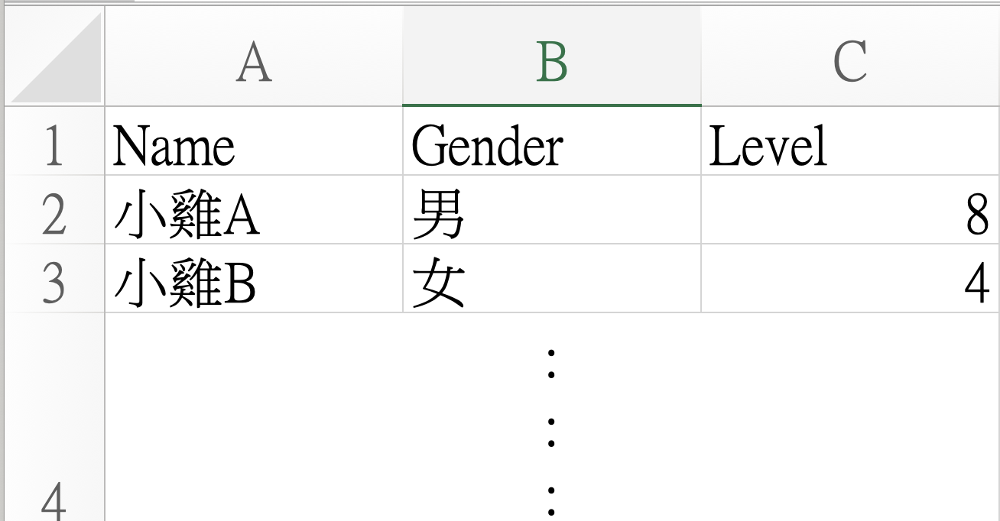

🏸
小雞🐥羽球計分板
賽程安排與戰績管理系統
使用 Google 帳號登入，只有你能查看與管理自己的賽事。不同裝置登入同一帳號即可繼續使用。
帳號識別碼（舊資料綁定用）
選擇我的工作區
建立工作區
📖 使用說明
1
登入與選擇工作區
以 Google 登入後選擇自己的工作區，也可建立新工作區。不同裝置登入同一 Google 帳號即可同步；其他帳號無法讀寫你的資料。
2
建立比賽
在賽程管理頁輸入比賽名稱（如「3/23 週末球局」）建立新賽事，每場比賽資料完全獨立。也可在此統一管理常用選手名冊，供下次快速加入。
3
加入球員與分組
新增球員（姓名、性別、實力級數 1–18），或從常用選手名冊勾選、CSV 批次匯入。CSV 每列需依序填入 姓名,性別,級數，例如 小明,男,10；系統會略過欄位不足或級數不是數字的資料。完成名單後點「自動分組」，系統依實力均衡配對，再用拖曳手動微調隊伍。
自動依實力均衡
拖曳調整隊伍
支援休息區
CSV 匯入小提醒
- 賽程頁與常用選手名冊都支援同一種 CSV 格式。
- 欄位順序固定為：姓名、性別、級數（1–18）。
- 若名單內已有同名選手，匯入時會自動略過避免重複。

查看 CSV 範例圖片4
計分與賽程
確認分組後進入計分頁，輸入每場比數即可自動更新戰績表（勝、負、得分、失分、淨勝分）。打完一輪可「同樣組合重打」，或重新分組再打一輪。
單輪配對賽
循環賽
戰績自動排名
5
邀請朋友協助計分
計分頁點「🔗 邀請協助計分」，分享連結或 QR Code 給朋友。朋友開啟邀請連結即可協助計分。連結 24 小時後失效，可隨時撤銷；主辦者畫面即時同步。
開啟連結即可協助
主辦者即時同步
6
雲端儲存與跨裝置
每次確認分數時自動同步至雲端。換手機或其他裝置後，選取相同使用者與比賽，就會載入雲端資料。
確認分數自動存雲端
跨裝置同步